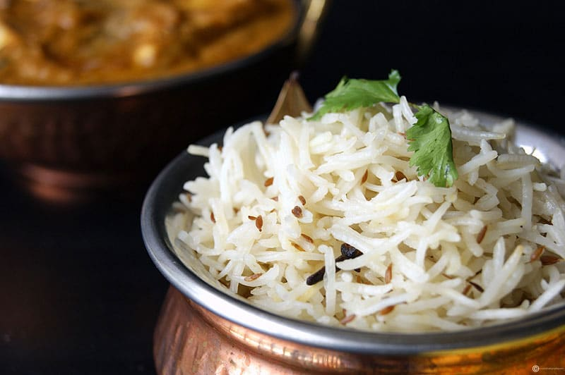
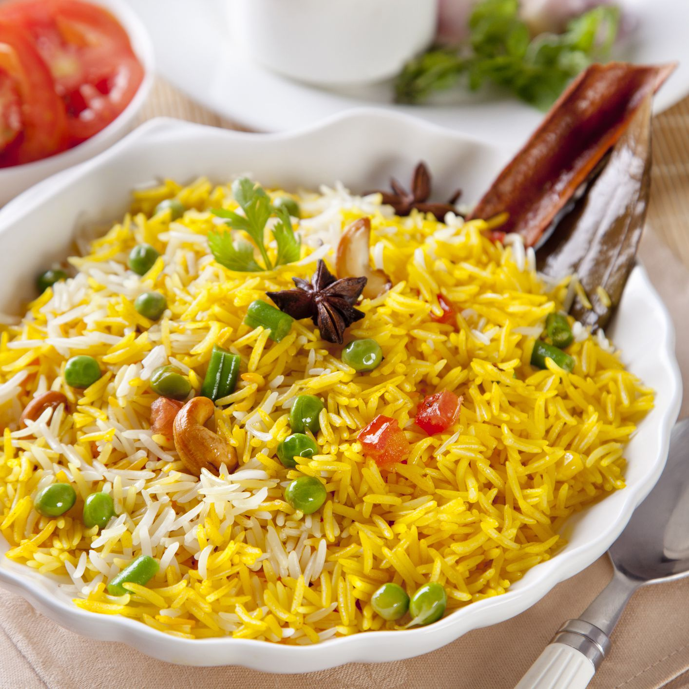

An easy and flavoured rice recipe made with cumin seeds, ghee and basmati rice. it is typically served
with choice of dal recipes, preferably dal tadka recipe, but can be served with any gravy based curries.
₹100

MEXICAN RICE
Long grain white rice is cooked in broth with lots of tomatoes, peppers, cumin powder, onions and garlic.
This One Pot Mexican Rice recipe with corn is much effortless than you would even think of!
It is packed with flavors and makes great side dish to your best loved Mexican food.
₹130
PULAO
Pulao or pilaf, is comfort food at its best and I make it when I want to cook something quick, easy and satisfying.
This one-pot dish made with rice and vegetables has added spices and herbs, giving it a mild aromatic flavor.
₹150

FRIED RICE
Fried rice is a dish of cooked rice that has been stir-fried in a wok or a frying pan and is usually mixed with other ingredients such
as eggs, vegetables, seafood, or meat. It is often eaten by itself or as an accompaniment to another dish.
₹180
CHICKEN BIRYANI
Well, no one can resist the sight of the aromatic and delicious Chicken Biryani recipe.
If you are also craving for that, then you need not go anywhere as we
have got this super-easy biryani recipe for you.
₹200
MUTTON BIRYANI
Hyderabadi mutton biryani is a classic dish made by layering rice over slow cooked mutton gravy.
Apart from being tastier mutton biryani has lots of healthy nutrients. Saturated fats present in mutton are less than total amount of unsaturated fats which
improves blood cholesterol.